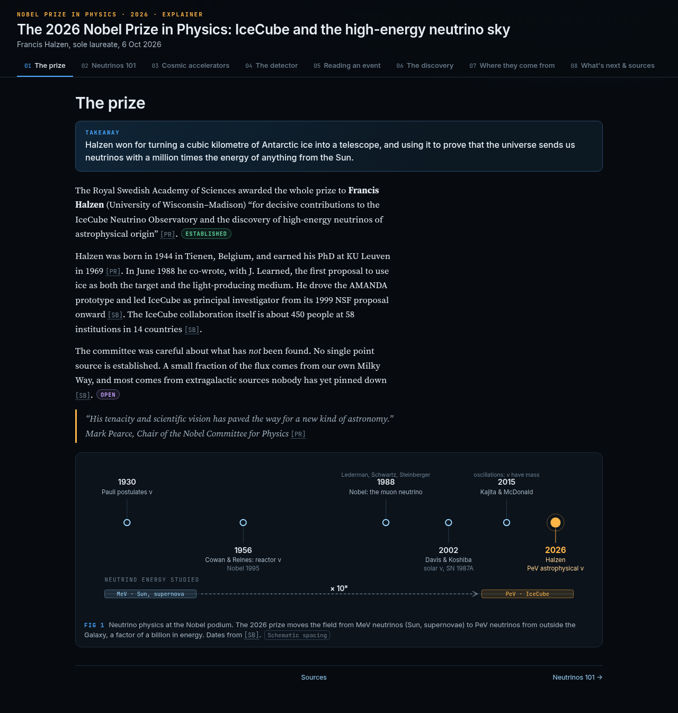
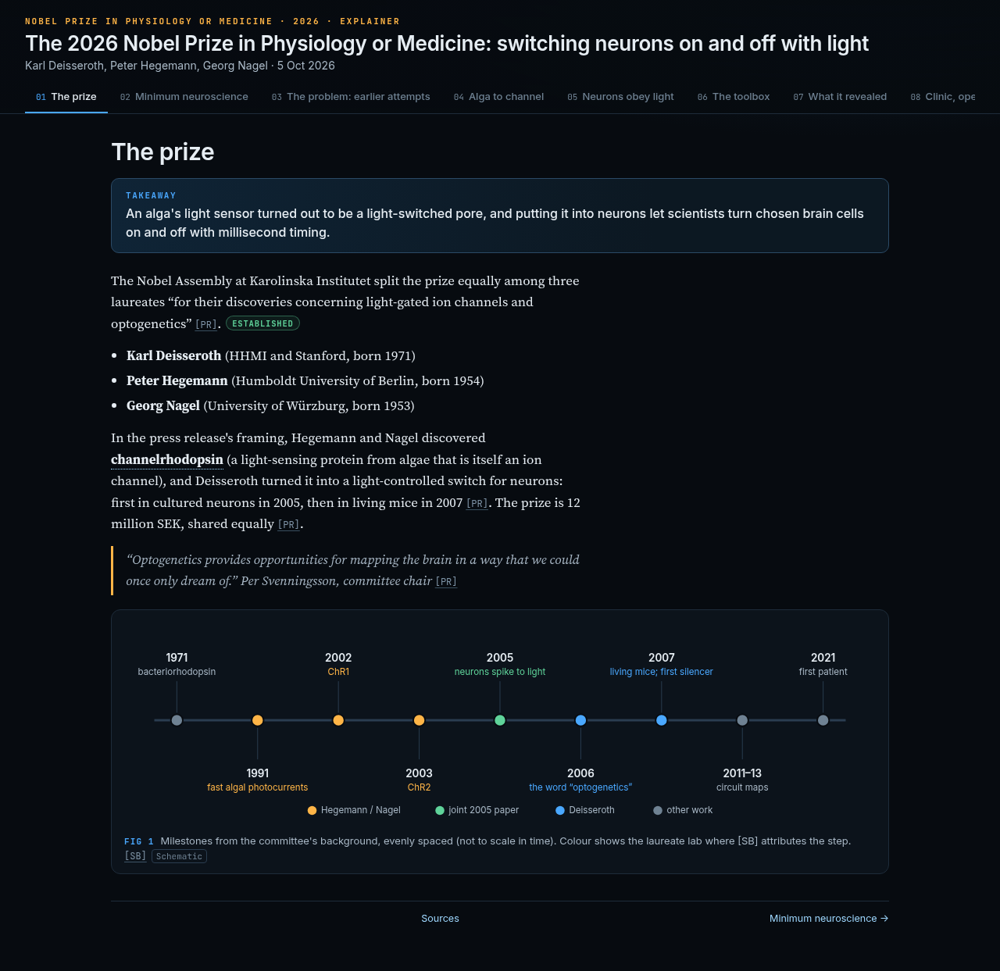
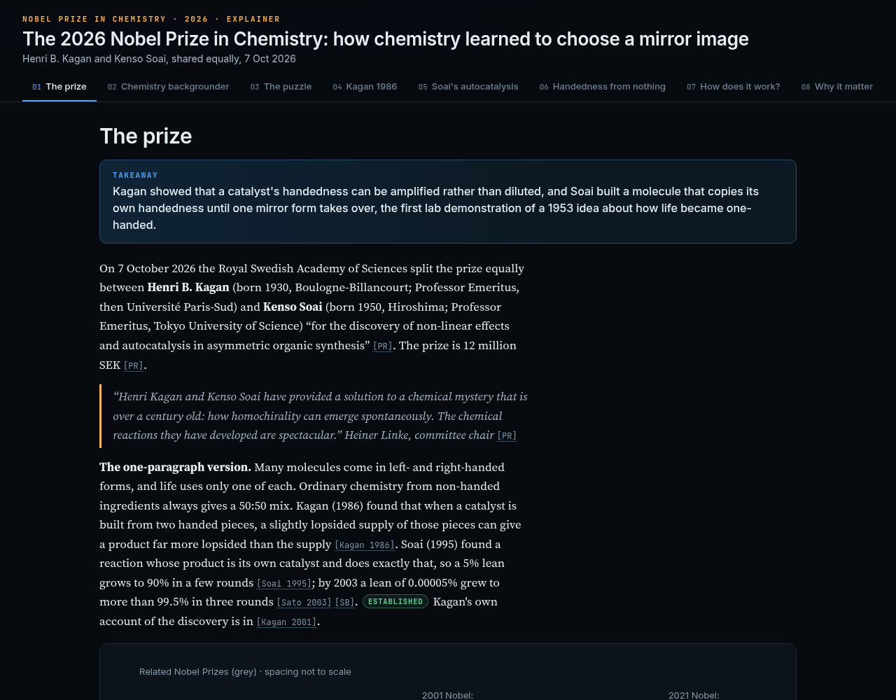

The 2026 Nobel Prizes, explained
Three interactive, single-page explainers of the 2026 science prizes. Each one is written for technically trained readers from outside the field. Terms are defined on first use, figures are labelled, and claims are tagged by strength of evidence.

Physics
IceCube and the high-energy neutrino sky
Francis Halzen, for the IceCube Neutrino Observatory and the discovery of high-energy neutrinos of astrophysical origin.

Physiology or Medicine
Switching neurons on and off with light
Karl Deisseroth, Peter Hegemann and Georg Nagel, for light-gated ion channels and optogenetics.

Chemistry
How chemistry learned to choose a mirror image
Henri B. Kagan and Kenso Soai, for non-linear effects and autocatalysis in asymmetric organic synthesis.